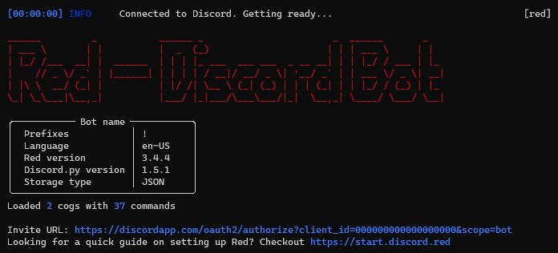
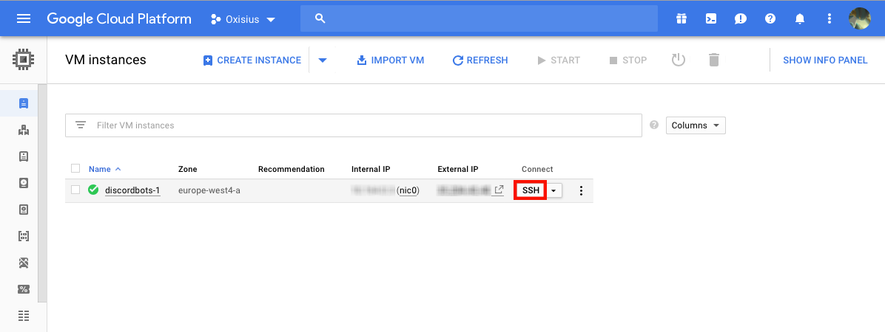
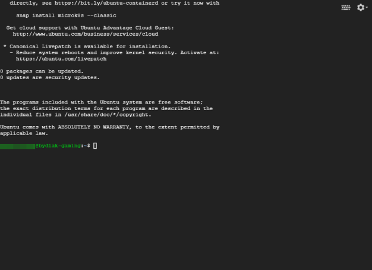

Getting started
If you recently installed Red, you should read this. This is a quick start guide for a general usage.
Note
If you haven’t installed Red, please do it by following one of the installation guides.
Assuming you correctly installed Red, you should have a window like this:
Invite Red to your server
When started, the console will show you the Invite URL
(visible at the bottom of the screenshot above).
Paste the link into your browser and select the server you want
to invite the bot in, like any other bot.
Note
You need the Manage server permission to add bots.
Complete the captcha, it should tell you Authorized! and you
should see your bot in the members list.
Attention
If Discord shows Bot requires code grant, please untick this
option in your token settings
Interact with Red
As a chatbot, you interact with Red via the Discord text channels
(not from the command prompt). To send commands to the bot, you will have to
use the prefix you set before, followed by the command you want to use. For
example, if your prefix is !, you will execute your command like this:
!ping.
Note
Since the prefix can be anything, it’ll be referenced as [p]
in documentations.
The commands
The command you’re going to use the most is help. This command will show you all of the available commands of the bot with a small description.
[p]help
Tip
The message is generated dynamically and users will only see the commands they can use. You can change what commands users can use with the permissions cog.
You can also pick a command to get its detailed description and the parameters.
[p]help command
Note
Arguments enclosed in < > are required for the command to work.
Arguments enclosed in [ ] are optional for the command;
you can decide whether to use them or not.
If your argument includes spaces like Hello world!, most of the time
you will need to place it in double quotes like this: "Hello world!".
Sometimes (especially for the last argument) these double quotes are not
required.
Arguments followed by an ellipsis ... means that you may provide
multiple arguments for the command.
For example, the command [p]cog install in the downloader cog has
the syntax cog install <repo> <cogs...>, meaning that you can provide
1 or more cogs to install from the repo.
Arguments followed by =value means that, if not specified,
the argument will be equal to value.
For example, the command [p]cleanup messages in the cleanup cog has
the syntax cleanup messages <number> [delete_pinned=False], which means
delete_pinned default will be false, unless you specify it as true.
You can use help to show the categories too, generally called cogs, by doing the following (notice the capitalization):
[p]help YourCategory
Help also shows command groups. They are group of commands. To get the description of a subcommand, type this:
[p]help commandgroup subcommand
When using subcommands, you also need to specify the command group.
As an example, cleanup has 6 subcommands. If you want
to use one of them, do: [p]cleanup messages 10
Cogs
Red is built with cogs, a fancy term for plugins. They are modules that add functionality to Red. They contain commands to use.
Red comes with 18 cogs containing the basic features, such as moderation, utility, music, streams…
You can see your loaded and unloaded cogs with the [p]cogs
command. By default, all cogs will be unloaded.
You can load or unload a cog by using the load or unload command
[p]load cogname
[p]unload cogname
Tip
You can load and unload multiple cogs at once:
[p]load cog1 cog2 ...
You can enable and disable everything you want, which means you can customize Red how you want!
Community cogs
There’s an entire community that contributes to Red. Those contributors make additional cogs for you to use. You can download them using the downloader cog.
You can start using the downloader cog by loading it: [p]load downloader
You can find cogs by searching on https://index.discord.red. Find whatever you want, there are hundreds of cogs available!
Note
An even better way to discover new cogs and repositories is in the works! Stay tuned!
Cogs come in repositories. A repository is a container of cogs
that you can install. Let’s suppose you want to install the say
cog from the repository Laggrons-Dumb-Cogs. You’ll first need
to add the repository.
[p]repo add Laggrons-Dumb-Cogs https://github.com/retke/Laggrons-Dumb-Cogs
Note
You may need to specify a branch. If so, add its name after the link.
Then you can install the cog
[p]cog install Laggrons-Dumb-Cogs say
Now the cog is installed, but not loaded. You can load it using the [p]load
command we talked about before.
Permissions
Red works with different levels of permissions. Every cog defines the level of permission needed for a command.
Bot owner
The bot owner can access all commands on every guild. They can also use exclusive commands that can interact with the global settings or system files.
You are the owner by default.
Server owner
The server owner can access all commands on their guild, except the global ones or those that can interact with system files (available for the bot owner).
Administrator
The administrator is defined by its roles. You can set multiple admin roles
with the [p]set roles addadminrole and [p]set roles removeadminrole commands.
For example, in the mod cog, an admin can use the [p]modset command
which defines the cog settings.
Moderator
A moderator is a step above the average users. You can set multiple moderator
roles with the [p]set roles addmodrole and [p]set roles removemodrole commands.
For example, in the filter cog, a mod will be able to use the various commands
under [p]filter (such as adding and removing filtered words), but they will
not be able to modify the cog settings with the [p]filterset command.
Tip
If you don’t like the default permission settings for some commands or want to restrict a cog or a command to a channel/member, you can use the permissions cog.
Hosting
If you are hosting Red on your personal computer, you will soon notice that if you close the window or if you shut down you computer, Red will be offline. It needs an environment to work and respond.
You can try to host Red somewhere it will always be online, like on a virtual private server (VPS) or on a personal server (e.g. Raspberry Pi).
If you want to do it, follow these steps.
Warning
Before trying to host Red on a Linux environment, you need to know the basics of the Unix commands, such as navigating the system files or use a terminal text editor.
You should read DigitalOcean’s tutorial: An Introduction to Linux Basics if you have not used Linux before.
Find a host
You need to find a server to host Red. You can rent a VPS (it can be free) on an online service. Please check this list of hosts for more information.
You can also buy a Raspberry Pi (~$20), which is a micro-computer that will be able to host Red. The model 3 or above is recommended.
Install Linux
Most of the VPS providers have tools for installing Linux automatically. If you’re a beginner, we recommend Ubuntu 24.04 LTS.
For Raspberry Pi users, just install Raspbian on a micro-SD card.
2.1. Log in
Note
This section is for those who have an online server. If you have a local Linux machine, just open the terminal and skip to the next part.
As we said before, a VPS is controlled through command line. You will have to connect to your VPS through a protocol called SSH.
On your host page (here, it is Google Cloud), find the SSH button and click on it. You will be connected to your server with command line. You should see something like this.
Note
Don’t forget to type the command
logoutto close the SSH properly.
Install and set up Red
Follow one of the Linux installation guides. We provide guides for the most used distributions. Check the list of install guides and search for your distribution.
Set up an auto-restart
Once you got Red running on your server, it will still shut down if you close the window. You can set up an auto-restarting system that will create a side task and handle fatal errors, so you can just leave your server running and enjoy Red!
For that, follow the systemd service guide.
User documentation
You will soon start using the Red core cogs. A detailed documentation is available for every core cog, under the How to use section.
The cog guides are formatted the same. They’re divided into 3 sections:
Guide
This will introduce you to the cog and explain you how it works.
Commands
A list of the available commands, with details and arguments. Each command guide will be formatted like this:
Syntax
A line that will show how the command must be invoked, with the arguments.
Aliases
Each command may have one or more aliases, which are alternative command names you can use to invoke the same command. For example,
[p]set colourcan also be invoked with[p]set color. If there are aliases for a command, they will appear just under the syntax.Description
A detailed description of what the command does, with details about how it must be used.
Arguments
A list of all arguments needed (or not) for the command, with more details.